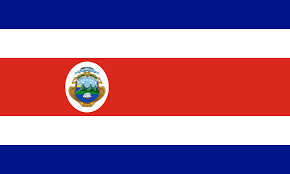
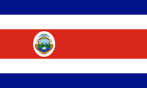

Dalam era globalisasi yang semakin kompleks, kerja sama antar negara menjadi semakin penting untuk mengatasi tantangan global yang memerlukan upaya kolektif. Kerja sama ini hadir dalam berbagai bentuk, seperti kerja sama regional, multilateral, dan bilateral. Masing-masing bentuk kerja sama ini memiliki karakteristik dan tujuan yang unik, serta memberikan kontribusi yang signifikan terhadap pencapaian tujuan pembangunan berkelanjutan.
Kerja sama regional, seperti yang terlihat dalam asosiasi seperti ASEAN, memungkinkan negara-negara dalam suatu wilayah geografis untuk bekerja sama dalam mencapai stabilitas politik, keamanan, dan kemakmuran ekonomi. Dengan mengintegrasikan pasar dan produksi, negara-negara anggota dapat meningkatkan daya saing dan mempromosikan pembangunan berkelanjutan. Contoh inisiatif sukses seperti ASEAN Economic Community (AEC) menunjukkan betapa pentingnya kolaborasi regional dalam menciptakan pasar tunggal yang terintegrasi.
Di sisi lain, kerja sama multilateral yang melibatkan lebih dari dua negara atau pihak, sering kali melalui organisasi internasional seperti Perserikatan Bangsa-Bangsa (PBB), memungkinkan penanganan isu-isu global dengan lebih efektif. Misalnya, melalui Protokol Kyoto dan Protokol Montreal, negara-negara bekerja sama untuk mengurangi emisi gas rumah kaca dan melindungi lapisan ozon. Kerja sama multilateral ini mempromosikan solidaritas dan keberlanjutan global melalui kolaborasi yang koheren dan terorganisir.
Tidak kalah penting adalah kerja sama bilateral, di mana dua negara bekerja sama secara langsung untuk mencapai tujuan bersama. Contoh kerja sama bilateral yang signifikan adalah antara Indonesia dan Costa Rica dalam bidang energi terbarukan. Dengan keahlian Costa Rica dalam energi hidro dan geotermal, Indonesia dapat meningkatkan kapasitas energi terbarukan di dalam negeri. Hal ini sejalan dengan Tujuan Pembangunan Berkelanjutan (SDG) 7: Energi Bersih dan Terjangkau, yang menekankan pentingnya akses terhadap energi yang terjangkau, andal, berkelanjutan, dan modern untuk semua.
Web ini akan merangkum berbagai bentuk kerja sama internasional tersebut, menyoroti manfaat dan dampaknya terhadap pencapaian tujuan pembangunan berkelanjutan, serta memberikan saran untuk pengembangan lebih lanjut. Melalui kerja sama yang efektif dan terkoordinasi, negara-negara dapat mengatasi tantangan global bersama dan menciptakan dunia yang lebih sejahtera dan berkeadilan untuk semua.